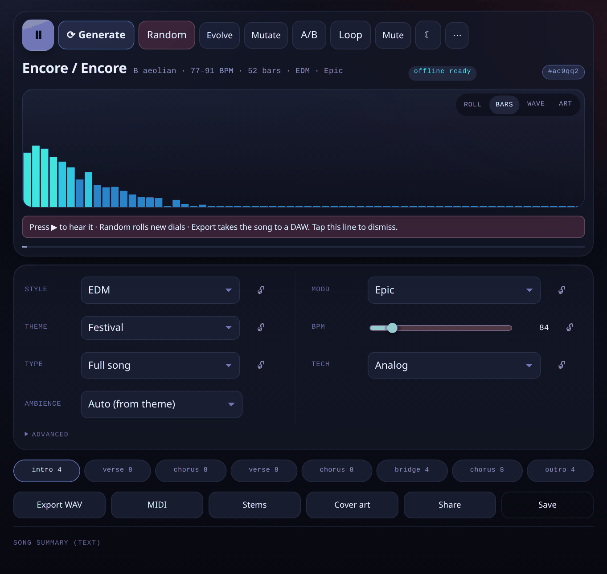
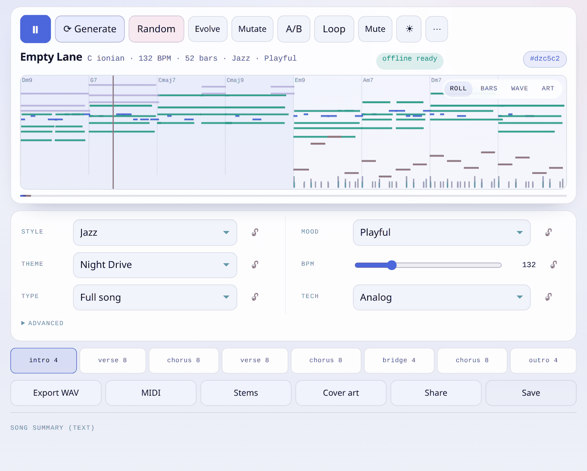
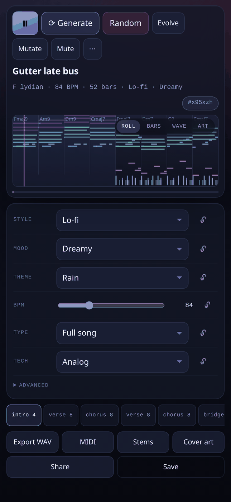
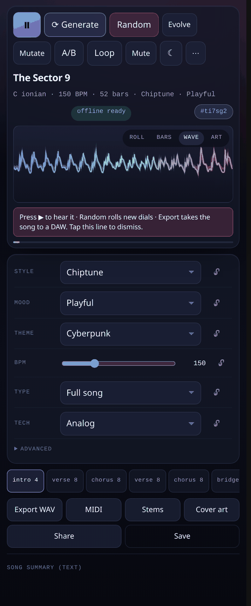
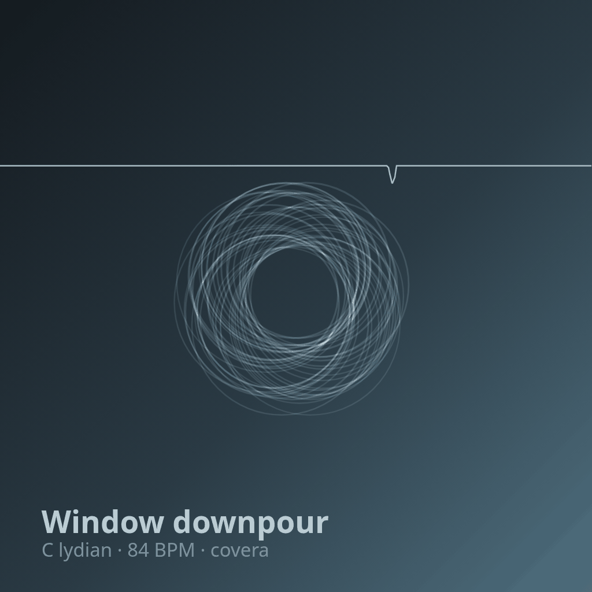

Choose six dials
Style, mood, theme, tempo, song type and synthesis engine. Lock any of them and the randomiser will respect it.
Generative composer · browser native · offline
One tap composes a finished-sounding track — harmony, melody, drums, mix and master. Every song is a pure function of six presets and a 12-character seed, so a link is a recording. No accounts. No server. No samples.
Every note below was generated in your browser a moment ago.
Style, mood, theme, tempo, song type and synthesis engine. Lock any of them and the randomiser will respect it.
An eleven-stage pipeline builds harmony from a Markov grid, voices it with a voice-leading solver, develops a motif across sections and masters the result.
WAV, per-track stems, Type-1 MIDI, cover art, or a seed link that reproduces the exact same song on someone else's phone.
The composer contains no Math.random, no Date.now and no
DOM. Same presets plus same seed produces a byte-identical song — asserted over a
hundred runs in the test suite, not just claimed in a README.
compose(presets, seed) → Song
Subtractive, FM, chiptune pulse, additive, wavetable, Karplus-Strong and noise — plus a drum kit built from oscillators and filtered noise. No audio files ship.
A song is a tempo map, not one number: choruses lift, verses settle, phrases get rubato and the last two bars ease off. The dial sets the centre, the drift slider sets how far it wanders.
An explicit theme switch, not just a media query — and the canvas palettes re-theme with the UI, so the piano roll stays legible in both.
Every note is checked against the key and the chord sounding under it. Random is sampled through a compatibility table, so it stays musical.
An ITU-R BS.1770 implementation runs in the app and in the tests. Exports are normalised to the style's target under a −1 dBTP ceiling.
The service worker precaches the whole shell and the app makes no runtime requests — no fonts, no analytics, no CDNs. Install it, switch off the network, keep composing.
caches: musicgen-v2 · fetch: cache-first · CSP: default-src 'self'





Open the studio, then use your browser's Install or Add to Home Screen. iOS: Share → Add to Home Screen. From then on it launches offline, with its own icon, and keeps playing when you switch apps.
# or run it locally git clone https://github.com/drsamonline/musicgen cd musicgen/app python3 -m http.server 8080 # → http://localhost:8080
One person's work: no company, no ads, no tracking, no paid tier. If this saved you an afternoon, a contribution keeps the next one coming — any amount, or none.
UPI drsohilboi@ybl · Ko-fi · PayPal · Books · All projects · Email